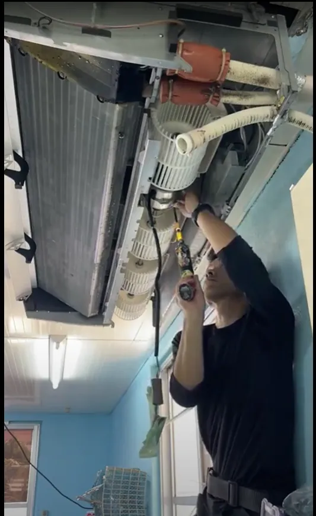

那覇市・浦添市｜築15〜30年の分譲マンション
マンションの水回り、
何社にも
相談しなくていい。
キッチンも、お風呂も、洗面も。
そろそろ気になる場所が増えてきたら、
まずはまとめて話してください。
水回り・住宅設備のご相談は、BCサービスが窓口になります。
内容に応じた専門業者と連携して進めます。
1か所だけでも大丈夫です。 まずは今気になっている場所を教えてください。
- 17年 清掃・現場経験
- 第二種 電気工事士
- 認定 電気工事従事者
- 那覇・浦添 重点対応エリア
こんなこと、思っていませんか。
壊れてはいない。
でも、家のあちこちが
少しずつ気になってきた。
築15〜30年ごろの分譲マンションでは、
設備の更新時期がまとめて来ることが珍しくありません。
-
キッチン
扉や天板が、そろそろ限界かもしれない
-
浴室
古くて、掃除しても清潔感が戻らない
-
洗面
化粧台も同じ時期に替えたほうがいい気がする
-
トイレ
古い。でも壊れてはいないから後回しにしている
-
エアコン・給湯
そういえば、同じくらいの年数が経っている
-
そして
一つずつ業者を探して、そのたびに同じ説明をするのが面倒
家の設備、まとめて見られます
これらの設備を、まとめてご相談いただけます。
-
キッチン
システムキッチンの交換・レンジフード
-
浴室
ユニットバスの交換・浴室設備
-
洗面
洗面化粧台の交換
-
トイレ
便器・温水洗浄便座の交換
-
給湯
給湯器の交換・不調のご相談
-
換気
浴室換気扇・レンジフード・換気設備
-
エアコン
買い替え・取付・クリーニング
-
照明・電気
照明器具交換・スイッチ・コンセント
「これは対応していますか」というご相談も歓迎です。
上記以外の住宅設備も、まずはお聞かせください。
まとめて相談すると、どう変わるか
一つずつ頼むより、まとめて相談したほうがいい理由。
-
01
説明が一度で済む
業者ごとに、住まいの状況・築年数・管理規約・希望を説明し直す必要がありません。一度お聞きした内容をもとに、必要な設備をまとめて整理します。
-
02
工事の順番と日程を整理できる
水回りの工事は、順番によって在宅の負担が変わります。別々に頼むと、そのたびに立ち会いと日程調整が発生します。まとめてご相談いただければ、無理のない順番と時期をご提案できます。
-
03
全部替えましょう、
とは言いません。「今やるもの」と「まだ待てるもの」を切り分けられる
すべてを一度に替える必要はありません。現状を見たうえで、優先度の高いものから整理してお伝えします。
気になっている場所が1か所でも、まとめてでも構いません。
BCサービスは、ご相談の窓口です
窓口は、ひとつ。
すべての工事を一社で抱え込むのではなく、
内容に応じた専門業者と連携して進めます。
窓口はBCサービスが最後まで担当します。
-
01
お客様
気になる場所を伝えるだけ
-
02
ここが窓口
BCサービス
ご相談を受け、現地を確認し、
内容を整理します -
03
内容に応じた
専門業者工事内容に応じて連携します
-
04
工事・
お引き渡し完了まで窓口はBCサービス
面倒が、どこまで減るか
何社にも相談しない、
というのはこういうことです。
別々に頼んだ場合
- 何社も探す
- 何度も説明
- 日程もバラバラ
- 設備ごとに業者を探す
- 見積の書式がバラバラで比較しにくい
- 立ち会い日程を何度も調整する
- 工事の順番は自分で考える
- 不具合時にどこへ連絡するか迷う
BCサービスにまとめてご相談
- 探すのは一度だけ
- 説明は一度
- 窓口も一つ
- 一度お聞きした内容をもとに整理します
- 内容を整理してお伝えします
- 日程をまとめて調整できます
- 順番と時期をご提案します
- 工事後のご相談も同じ窓口
減らせるのは、費用だけではありません。
考えること、連絡すること、待つこと。その手間が減ります。
どの段階でも、ご相談いただけます
こんなご相談の仕方で大丈夫です。
-
相談例 01
まだ何も決まっていない
浴室とキッチンが古いのですが、どちらから手をつけるべきか分かりません
現状を確認したうえで、優先度をお伝えします。すぐに工事をしなくても構いません。
-
相談例 02
1か所だけ
トイレだけ替えたいのですが、対応できますか
1か所だけのご相談も歓迎です。そのうえで、他に気になる箇所があればあわせてお聞きします。
-
相談例 03
まとめて
築25年の分譲マンションで、水回りを一通り見直したいと考えています
全体を確認し、内容を整理してご提案します。今やるものと、まだ待てるものを分けてお伝えします。
どんな人が、家を見にくるのか
BCサービスについて

BCサービス代表
照屋 昴
清掃・現場経験17年
- 第二種電気工事士
- 認定電気工事従事者
設備の交換は、本体を入れ替えるだけで
終わらないことがあります。
電気の状態、換気の状態、周辺の劣化。現場で見てきたからこそ、設備の周辺まで含めてご相談をお受けできます。
沖縄県南部を拠点に、住宅の設備まわりのご相談をお受けしています。エアコンクリーニング、ハウスクリーニング、家電販売、エアコン販売を通して、住宅設備を実際に触り、内部まで見てきました。
内容に応じた専門業者と連携しながら、窓口としてお客様の側に立って進めます。

-
現場を見る
実際の設備、設置状況、周辺の状態を自分の目で確認します。
-
状況を整理する
必要な工事内容と、優先度の高いものを分けて整理します。
-
必要なら専門業者につなぐ
内容に応じた専門業者と連携し、窓口は最後までBCサービスが担当します。
はじまりは、LINE1通から
ご相談から工事までの流れ
-
STEP1
LINEまたは電話で相談
メッセージ1通から、で大丈夫です。
気になっている場所、築年数、現在の状態などをお聞きします。写真があればLINEで送っていただけます。
-
STEP2
事前に内容を整理
お伺いした内容から、確認が必要な設備や工事内容を整理します。必要に応じてメーカー資料なども準備します。
-
STEP3
必要に応じて専門担当を準備
内容によって専門的な確認が必要な場合は、専門担当・専門業者と連携できる状態を整えます。
-
STEP4
現地確認
実際の設備、設置状況、周辺の状態を確認します。マンションでは必要に応じて、管理規約や搬入経路なども確認します。
-
STEP5
商品・工事内容を整理してご提案
必要な内容を整理し、優先度の高いものと、まだ待てるものを分けながらご提案します。
-
STEP6
工事・お引き渡し
内容に応じた専門業者と連携して進めます。工事後のご相談もBCサービスが窓口になります。
STEP1は、メッセージ1通からで大丈夫です。
費用の考え方
安い数字を先に見せるより、
必要な内容を整理してから
金額をお出しします。
BCサービスは、最初から一律の価格を掲げていません。
同じ「キッチン交換」でも、設備のグレード、配管や電気の状態、搬入経路、マンションの規約によって、必要な工事は変わります。実際に見ないまま出した安い金額は、あとから追加費用が発生する原因になります。
- 現地を確認する
- 必要な内容を整理する
- お見積りをお出しする
お見積りでお伝えすること
- 何にいくらかかるのかを分けてご説明します
- 今やるべきものと、待てるものを分けてお伝えします
- ご予算がある場合は、その範囲で優先順位を整理します
金額をご覧いただいてから、ご検討ください。
対応エリア
那覇市・浦添市を重点にお伺いします。
重点対応エリア
- 那覇市
- 浦添市
その他相談可能エリア
- 豊見城市
- 南城市
- 八重瀬町
- 与那原町
- 南風原町 ほか
上記以外の地域についても、内容によりご相談をお受けできる場合があります。まずはお問い合わせください。
よくあるご質問
気になる点は、先にご確認ください。
1か所だけの相談でも大丈夫ですか。
大丈夫です。1か所のご相談から承ります。そのうえで、他に気になる箇所があればあわせてお聞きします。
まだ工事するか決めていませんが、相談してもいいですか。
構いません。状況の確認だけのご相談も承っています。
工事はBCサービスが行うのですか。
内容に応じた専門業者と連携して進めます。ご相談・現地確認・内容の整理・工事後の窓口はBCサービスが担当します。
分譲マンションですが、対応できますか。
対応しています。管理規約の確認や搬入経路の確認もあわせて行います。
見積もりの費用について教えてください。
現地確認とお見積りの進め方については、ご連絡いただいた際にご説明します。ご不明な点はお尋ねください。
しつこい営業はありますか。
ご希望がなければ、こちらから繰り返しご連絡することはありません。
LINEを使っていませんが相談できますか。
お電話でもご相談いただけます。
対応エリア外かもしれません。
内容によりご相談をお受けできる場合があります。まずはお問い合わせください。
ご相談は、ここから
家の設備のこと、
まとめてご相談ください。
どこから手をつけるべきか分からない、という段階で構いません。気になっている場所を教えていただければ、そこから整理します。
- 1か所だけでも、家全体でも大丈夫です
- 写真があればLINEで送っていただけます
- その場でお決めいただく必要はありません
相談窓口
BCサービス代表 照屋 昴
1か所だけでも大丈夫です。